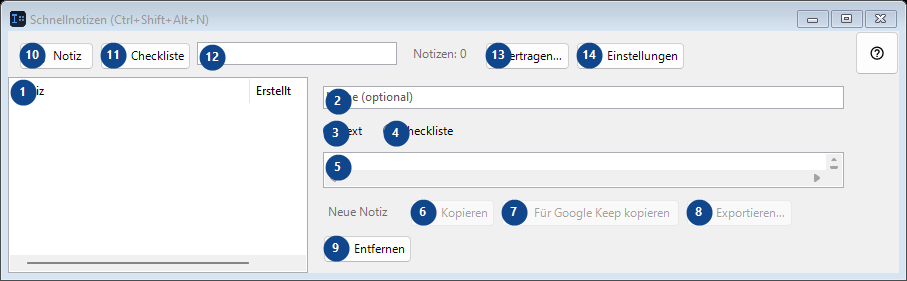
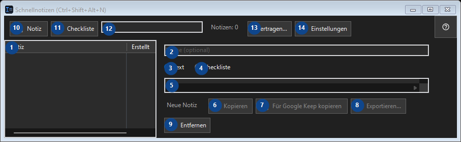

Schnellnotizen (Ctrl+Shift+Alt+N)
Zweck
Ein kleiner lokaler Notizblock: per Tastenkombination öffnen, einen Codeausschnitt oder Gedanken hineinwerfen, schließen.


Reihenfolge
Lesen Sie die nummerierten Erklärungen, wählen Sie die benötigten Werte und fahren Sie mit dem Fensterbefehl fort.
Elemente
1. Elemente
Dieser Bereich zeigt den aktuellen Inhalt oder Status. Wählen Sie einen Eintrag zur Bearbeitung. Notiz / Erstellt
Ihre Tastenkürzel2. Wählen Sie den Wert zur benachbarten Beschriftung oder geben Sie ihn ein. Prüfen Sie ihn vor dem Fortfahren.
Wählen Sie den Wert zur benachbarten Beschriftung oder geben Sie ihn ein. Prüfen Sie ihn vor dem Fortfahren.
Ihre Tastenkürzel3. Text
Nutzen Sie diesen Befehl für die genannte Aktion. Lesen Sie eine Bestätigung, bevor Sie zustimmen.
Ihre Tastenkürzel4. Checkliste
Nutzen Sie diesen Befehl für die genannte Aktion. Lesen Sie eine Bestätigung, bevor Sie zustimmen.
Ihre Tastenkürzel5. Wählen Sie den Wert zur benachbarten Beschriftung oder geben Sie ihn ein. Prüfen Sie ihn vor dem Fortfahren.
Wählen Sie den Wert zur benachbarten Beschriftung oder geben Sie ihn ein. Prüfen Sie ihn vor dem Fortfahren.
Ihre Tastenkürzel6. Kopieren
Nutzen Sie diesen Befehl für die genannte Aktion. Lesen Sie eine Bestätigung, bevor Sie zustimmen. Dieses Element ist derzeit nicht verfügbar. Aktivieren Sie zuerst die Funktion oder wählen Sie einen Eintrag.
Ihre Tastenkürzel7. Für Google Keep kopieren
Nutzen Sie diesen Befehl für die genannte Aktion. Lesen Sie eine Bestätigung, bevor Sie zustimmen. Dieses Element ist derzeit nicht verfügbar. Aktivieren Sie zuerst die Funktion oder wählen Sie einen Eintrag.
Ihre Tastenkürzel8. Exportieren...
Nutzen Sie diesen Befehl für die genannte Aktion. Lesen Sie eine Bestätigung, bevor Sie zustimmen. Dieses Element ist derzeit nicht verfügbar. Aktivieren Sie zuerst die Funktion oder wählen Sie einen Eintrag.
Ihre Tastenkürzel9. Entfernen
Nutzen Sie diesen Befehl für die genannte Aktion. Lesen Sie eine Bestätigung, bevor Sie zustimmen.
Ihre Tastenkürzel10. Notiz
Nutzen Sie diesen Befehl für die genannte Aktion. Lesen Sie eine Bestätigung, bevor Sie zustimmen.
Ihre Tastenkürzel11. Checkliste
Nutzen Sie diesen Befehl für die genannte Aktion. Lesen Sie eine Bestätigung, bevor Sie zustimmen.
Ihre Tastenkürzel12. Notizen: 0
Wählen Sie den Wert zur benachbarten Beschriftung oder geben Sie ihn ein. Prüfen Sie ihn vor dem Fortfahren.
Ihre Tastenkürzel13. Übertragen...
Nutzen Sie diesen Befehl für die genannte Aktion. Lesen Sie eine Bestätigung, bevor Sie zustimmen.
Ihre Tastenkürzel14. Einstellungen
Nutzen Sie diesen Befehl für die genannte Aktion. Lesen Sie eine Bestätigung, bevor Sie zustimmen.
Ihre Tastenkürzel